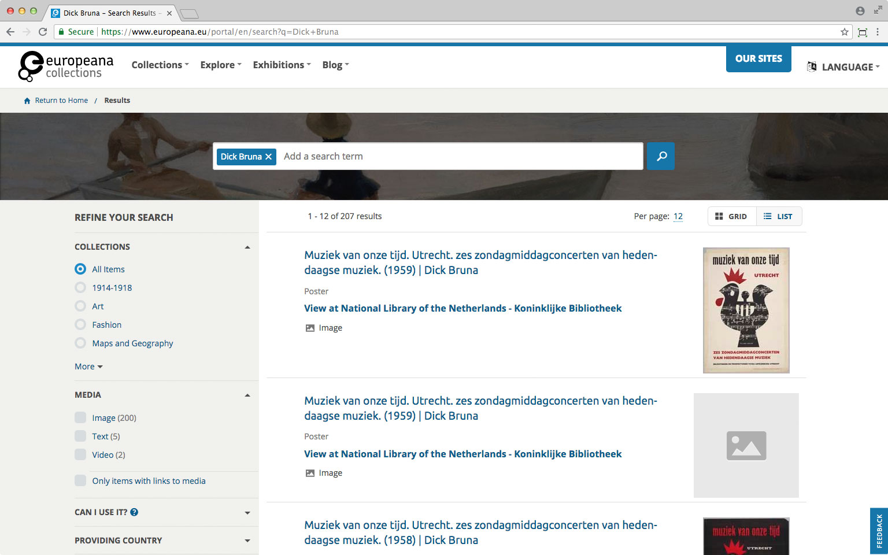
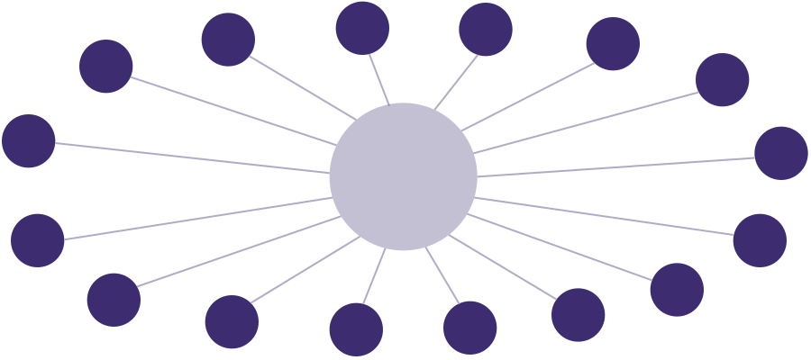
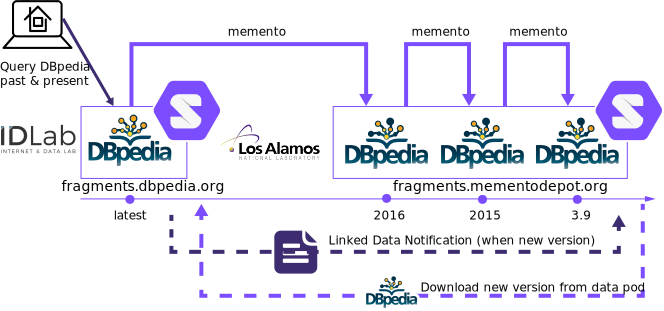
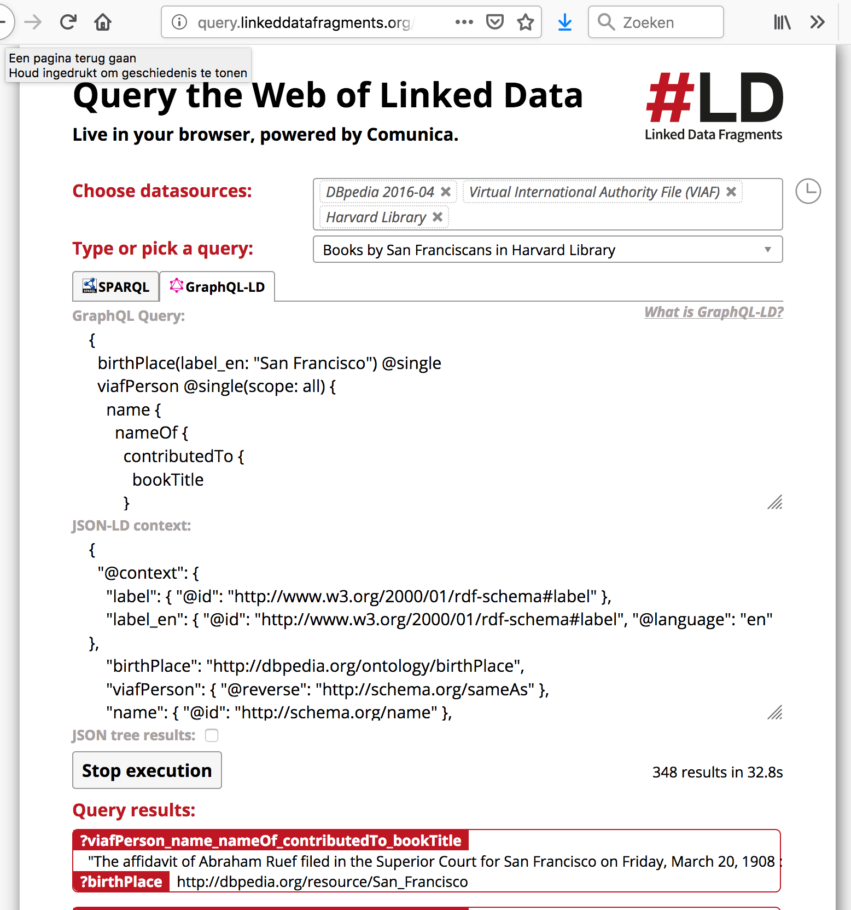
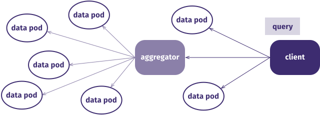
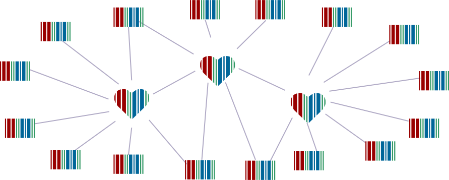

Maybe I should have kept the bricks where they were.
After the LOD: how to organize our network of institutions?
- Who offers what service?
- Who ensures the SLA of data access?
- Who controls what data?
- ...
Photo by Ryan
Quintal on Unsplash
GLAMs start decentralized.
Why do we centralize via aggregation?
Visibility and discovery, quality, and infrastructure.


GLAM networks start decentralized.
Why do we centralize via aggregation?
-
Easier disambiguation and interlinking,
but a bigger problem space.
-
Single point of access,
but long-term synchronization and quality issues.
-
No burden of infrastructure,
but no control and feedback (eg. enrichments or innovations).
Centralisation and decentralisation both have their merits.
In the end, what matters is scale and sustenance for your network.
Decentralised Web networks make individual nodes
the source of truth.

Aggregators need to become part
of a larger network.

Aggregators serve as a crucial
but transparent layer in the network.

Aggregators’ main responsibility becomes
fostering a network between nodes.
Think decentralised:
a future for Web data exchange with Solid
Solid is about choice.
The Solid ecosystem enables institutions to pick the
apps they need,
while
storing their data wherever they want.
Institutions control their data,
and share it
with the apps and people they choose.
 Photo by Nathan Dumlao on Unsplash
Photo by Nathan Dumlao on Unsplash
People choose where they store
every single piece of data they produce.

They can grant apps and people access
to very specific parts of their data.

Separating app and storage competition
drives innovation and increases mobility.

Solid is not a company or organisation.
Solid is not (just) software.
-
Solid is an ecosystem
- standards enable interoperability
-
Solid is a movement
- shifting the app builder mindset
-
Solid is a community
-
different people, companies, and organisations
![[the Solid logo]](images/solid-logo.svg)
Anyone can build or host
software for Solid.
-
a server at home and/or
at your workplace
-
rent server space
-
use one of the
free community servers
The Solid server acts as a data pod
that stores and guards your data.
-
a regular Web server
- with support for access control
- with support for Linked Data
-
application-agnostic
- build any application
- application-specific logic resides in clients
-
just like your website
- your data can be opened with any app
A typical data pod can contain
any data you create or need online.
- profile üë§
- comments üó£
- datasets üíæ
- vocabularies üÜí
- thesauri üóÇ
- … ✨
Solid clients are browser or native apps
that read from or write to your data pod.
-
you give apps permission
- choose very precisely what they can access
-
friends give you permission
- choose very precisely what you can access
-
apps deliver a unified experience
- browse your friends’ pictures along with yours
Any app you can envision,
you can build with Solid.
- calendar üìÖ
- social feed üë•
- search engine üîç
- archiving system üóÑ
- … ✨
Netwerk Digitaal Erfgoed facilitates portals (apps)
to reach the right collections (data
pods).

Archiving DBpedia as a solid app.
Two institutions share the DBPedia TPF API.

Think decentralised:
a future for Web data exchange with Solid
With JSON-LD, every piece of data
can link to any other piece of data.
{
"@context": "https://www.w3.org/ns/activitystreams",
"id": "#ruben-likes-pfia2019",
"type": "Like",
"actor": "https://ruben.verborgh.org/profile/#me",
"object": "https://www.irit.fr/pfia2019/#this",
"published": "2019-06-02T12:00:00Z"
}
Data shapes and their semantics
enable layered compatibility.
{
"@context": "https://www.w3.org/ns/activitystreams",
"id": "#ruben-likes-ldac2019",
"type": "Like",
"actor": "https://ruben.verborgh.org/profile/#me",
"object": "https://www.irit.fr/pfia2019/#this",
"published": "2019-06-02T12:00:00Z"
}
Different source data
can be concatenated.
{
"@context": "https://www.w3.org/ns/activitystreams",
"@graph": [{
"type": "Like",
"actor": "https://ruben.verborgh.org/profile/#me",
"object": "https://www.irit.fr/pfia2019/#this",
"published": "2019-06-02T12:00:00Z"
},{
"type": "Like",
"actor": "https://example.org/people/marie#me",
"object": "https://www.irit.fr/pfia2019/#this",
"published": "2019-06-02T12:05:00Z"
}]
}
How can we help developers
to attract users?
-
We need to create new developer experiences
that make programming with Linked Data fun.
-
How to get them to think in graphs, not objects?
-
How to build Linked Data apps without exposure to raw RDF?
-
Take a pragmatic stance at a pod-centric world
It won't happen overnight.
-
Provide tools for the status-quo: data is ugly, databases are old.
- Invest in reducing the data pod startup cost: learn "silo" language.
LDflex is a domain-specific language
for traversing Linked Data graphs.
const person = node('https://me.example.org/#me')
person.label
person.friends.firstName
const label = await person.label
for await (const name of person.friends.firstName)
console.log(name)
LDflex uses SPARQL under the hood
and invokes the Comunica query engine.
const person = node('https://me.example.org/#me')
const query = await person.friends.firstName.sparql
SELECT ?firstName WHERE {
<https://me.example.org/#me> foaf:knows ?v0.
?v0 foaf:givenName ?firstName.
}
Comunica is a modular JavaScript framework
for querying Linked Data
on the Web.
-
Dynamically combining Swappable components and native Web technologies
-
Federated or single-source queries over any type of data source
- Continues the Linked Data API trade-off rationale of Linked Data Fragments
-
Handles multiple query languages such as SPARQL, GraphQL-LD and LDFlex.
Check out http://comunica.linkeddatafragments.org and http://query.linkeddatafragments.org

Moose: Move-to-Solid Easily with RML.io
-
Centered around the flexible and maintainable
RDF Mapping language (RML).
-
Declarative (in RDF) and reusable mapping documents
-
Extensible towards new data sources and transformation functions.
-
Toolsuite to facilitate setting up data pods
-
Static and streaming data (RML Mapper & Streamer)
-
YAML-based shorthand syntax (YARRML) and graphical interface (RML Editor)
-
Data quality assessment (Validatrr)
Check out http://rml.io
Think decentralised:
a future for Web data exchange with Solid
Decentralization needs replication
for realistic performance.

Main point of the presentation
Something wikidata
One Wikidata can facilitate smaller Wikidata's.
Solid makes an excellent glue.
